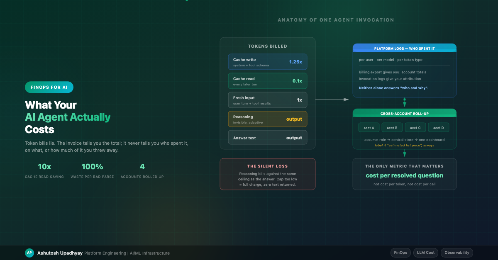

FinOps for AIYour invoice tells you the total. It never tells you who spent it, which tokens were wasted, or whether the last model upgrade paid for itself. Here's how to build the visibility that does.
Six months into running an agentic platform in production, a finance partner asked me a reasonable question: "Which teams are driving the AI spend, and is it going up because we have more users or because each question got more expensive?"
I could not answer it. I had a monthly total from the cloud bill and a vague sense that things were fine. That's not FinOps — that's hoping.
Agentic systems make this harder than classic RAG in three specific ways. A single user message triggers six or more model calls, not one. Reasoning models spend tokens you never see in the output. And the bill arrives aggregated by cloud account, while the thing you need to govern is a person asking a question. Everything below is what it took to close that gap.
This is the one that cost me real money before I understood it, so it goes first.
Modern reasoning models think before they answer. On several current frontier models that thinking is adaptive — the model decides per request whether to reason and for how long. And critically: reasoning tokens bill against the same output ceiling as the answer.
Put those two facts together and you get a failure mode that is invisible in your logs. If you set a modest
max_tokens and send a hard prompt, the model can spend the entire budget thinking and return
zero characters of answer — billed in full.
Here are four measurements from the same prompt against the same model, isolating each knob:
| Configuration | Stop reason | Output tokens | Answer returned |
|---|---|---|---|
| No effort setting, cap 1024 | max_tokens |
1024 | 0 characters |
Effort low, cap 1024 |
max_tokens |
1024 | 2,800 chars — cut off mid-sentence |
| Cap 8000, no effort setting | — | — | Read timeout: thinking ran unbounded |
Effort low + cap 8000 |
end_turn |
2,693 | 7,780 chars — clean |
The dangerous half-fix: row two. Capping effort alone is worse than doing nothing, because a response cut off mid-sentence looks like a real answer. An empty response is obviously broken and someone files a bug. A truncated one gets scored as a wrong answer, parsed as malformed JSON, or shown to a user as a bad summary — and nothing anywhere flags it as a config problem.
You need both knobs: bound the reasoning effort and raise the ceiling well above what the answer alone needs. Testing them together hides this, so isolate them when you diagnose.
Two operational rules fall out of this:
stop_reason. If it's max_tokens, the output is
incomplete regardless of whether text came back. Treating that as a valid response is the core mistake.The fingerprint to alert on: output_tokens sitting exactly at your cap with zero reasoning
tokens reported separately. That means you paid full price for thinking you never received and an answer that
never arrived.
A related trap, this one purely in your parsing code. When a reasoning model returns content, the response body is a list of blocks — and the thinking block comes first:
# WRONG — silently returns '' whenever the model chose to think
text = response["content"][0]["text"]
# RIGHT — select by type, never by position.
# This shape is the native messages API / raw-invoke body:
text = "".join(
b.get("text", "")
for b in response.get("content", [])
if isinstance(b, dict) and b.get("type") == "text"
).strip()
One portability warning, because copying the wrong variant reintroduces the exact bug this section is about. The
block shape differs between API surfaces. On the native messages body above, blocks carry an explicit
type discriminator. On the cloud provider's unified conversation API there is no
type field — a content block is a union whose member key is the type, so you test for key
presence instead:
# Same idea, unified conversation API shape
blocks = response["output"]["message"]["content"]
text = "".join(b["text"] for b in blocks if "text" in b).strip()
Filter on the wrong one and you get an empty string on every response — the failure mode of this entire section,
reintroduced by the fix for it. The same divergence applies to the field names: the native API uses snake_case
(stop_reason, output_tokens) while the unified API uses camelCase
(stopReason, outputTokens). The values mean the same thing; the keys don't.
With the first version, a real planner prompt returned blocks ['thinking', 'text'], 2,000 output
tokens billed, and content[0].text == ''. Downstream json.loads('') threw. You
are charged for the entire generation and discard 100% of it.
What makes this genuinely nasty is that adaptive thinking means the block layout varies by prompt.
"What is 2+2" returns ['text'] and works fine. A complex planning prompt returns
['thinking', 'text'] and fails. So position-based indexing breaks intermittently, which is
the hardest kind of bug to attribute to cost.
Pattern worth adopting: put text extraction in one shared helper and ban direct indexing of
response content anywhere else. I have a single extract_text() used by every raw model caller —
planner, router, critic, reporter. Higher-level framework SDKs generally handle this correctly; it's the
hand-rolled calls that bite.
Prompt caching was the single highest-leverage cost lever I found in an agentic system, because agents re-send an enormous static prefix on every single turn: a long system prompt plus the full JSON schema of every tool you've registered. With 30-plus tools, that schema block dwarfs the user's actual question.
Cache economics are asymmetric in your favour: a cache write costs roughly 1.25x normal input price on the short five-minute retention, and every subsequent read costs roughly 0.1x. Over a multi-turn agent loop, that's transformative — one read pays the write back.
If your provider offers a longer retention window the write costs about 2x instead, which moves breakeven to two reads. That's usually still worth it for an agent loop, and it addresses a real problem: a five-minute window expires during exactly the sessions you most wanted to cache, where the user is thinking between turns or a tool call is slow. Worth checking availability per model rather than assuming, though — on current models the longer window is not offered everywhere.
Three things routinely stop it from working, and the first one is the least known.
Every cache checkpoint has a minimum token count, and it varies by model — around a thousand tokens for some, four thousand for the larger and smaller ones alike. Below that threshold, the behaviour is the worst possible: the request succeeds and simply isn't cached. No error, no warning, no log line. If your system prompt is modest and you've only registered a handful of tools, you may be under the floor and never know. Check the reported cache-read tokens on a repeat call; if they're zero and you were expecting a hit, measure your prefix length before debugging anything else.
The cache key is a hash of the prefix. If you interpolate anything per-user into the system prompt — and injecting the caller's identity there is a very common pattern — then every user produces a different hash and you get zero cross-user cache hits. You've built a cache that only ever helps one person at a time.
The fix is to move identity out of the system prompt and into the first user turn, then read it server-side where tools need it:
# Before: kills cross-user caching
system_prompt = f"{BASE_PROMPT}\n\nCurrent user: {user_email}"
# After: system prompt is byte-identical for everyone
system_prompt = BASE_PROMPT
first_turn = f"[User: {user_email}]\n{query}"
# ...and tools that need identity read it from server-side request
# context, never from a model-supplied argument. (More on why in
# the security post — that pattern is also an access-control fix.)
#
# NOTE: this string is a phrasing hint for the model, nothing more.
# A user can type "[User: someone.else@company.com]" themselves, so it
# must never reach an authorization decision.
Making the prefix static is necessary but not sufficient, and this is where I lost a day. Caching only writes at a breakpoint, and if you let the platform place that breakpoint automatically it goes on the last cacheable block. In the layout above, the last block is the user turn — the one thing that changes every request. So you write a fresh cache entry every single call and never read one. Cache-write charges go up, hit rate stays at zero, and nothing errors.
Put the breakpoint at the end of the static prefix — after the tool schemas and the system prompt — rather than at the end of the message list. Most agent frameworks expose this as a pair of flags for caching the system prompt and the tool definitions rather than as a manual breakpoint, which is the easier path if you're on one; if you're hand-rolling, place it explicitly and verify against the reported cache-read count rather than assuming.
Once caching is on, the provider reports cached tokens in separate fields — read and write counts split out from the normal input count. If your accounting code only sums the field it always summed, cached tokens vanish from your reporting. Your dashboard shows a cost drop that is partly real savings and partly you no longer counting. Capture all the token fields explicitly.
One more subtlety, and it cuts both ways. If your platform offers both globally-routed and region-pinned model endpoints, the globally-routed one may give you a lower cache hit rate, because the cache is local to wherever the request landed — under load, cross-region routing produces more cache writes. But pinning to a region is not free: on current models, regional and multi-region endpoints are priced meaningfully above the global ones, on the order of ten percent. So "pin it to recover the cache hits" can be net-negative depending on your hit rate. This is a genuine measurement question rather than a rule of thumb, and it's the sort of thing where a fifteen-minute experiment beats an afternoon of reasoning.
Here is the structural problem with LLM cost visibility. Your billing export is authoritative on amount but has no idea who caused it. Your model invocation logs have exact token counts per call, but they are not the invoice.
And they probably don't know who your users are either. This is the assumption that will quietly wreck the pipeline, so it's worth being blunt about. An invocation log record identifies the cloud principal that made the call — the IAM role. If your agent is a service, every user's traffic arrives under the same service role, and grouping those logs by identity gives you exactly one row: the robot. Per-user attribution from invocation logs alone is zero.
The fix is to stamp the identity yourself. The invocation APIs accept a caller-supplied metadata object — a small set of key-value pairs that lands in the log record alongside the token counts — and that is the documented place to put your authenticated user, tenant, trace ID and cost-centre tag. Set it on every call. The alternative is issuing per-user role sessions so the principal genuinely differs per person, which is a much larger identity change and only makes sense if your users already federate directly to the cloud provider.
Read the identity from your server-side request context when you set it, never from anything the model produced. Attribution that a user can influence is not attribution, and a cost report is exactly the kind of thing people will later be held to.
The pipeline that solved this for me, across several cloud accounts:
account / year / month / day.Four hard-won details in that loop:
Once you have per-call attribution, the obvious lever appears: not every step in an agent pipeline needs your most capable model. In a multi-agent setup I run, the split looks like this:
| Role | Tier | Why |
|---|---|---|
| Single-agent user path | Mid | High call volume, well-scoped tool selection, latency-sensitive |
| Research planner / synthesizer | Top | Long-horizon reasoning where a wrong plan wastes every downstream call |
| Adversarial critic in the research loop | Top | Adversarial review is exactly where capability gaps show up. Note this is the critic that argues with a synthesis — narrower mechanical checks, like verifying every claim is grounded in a retrieved source, run fine on the mid tier |
| Classification, routing, extraction | Small / fast | Deterministic-ish work; a big model here is pure waste |
Governance rule I'd enforce from day one: model IDs live in runtime configuration, never in code defaults. When someone asks "what model is production using?", the answer must be one lookup in one place. A code default that disagrees with deployed config is how you end up reporting a tier you aren't actually running — and paying for a tier you thought you'd moved off.
One anti-pattern deserves its own callout because I shipped it. Frontier models increasingly reject classic sampling parameters — temperature, top-p — with a validation error. If your error handling treats any validation error as "model unavailable" and falls back to a cheaper model, then a simple request defect turns into a silent, permanent downgrade. Users get answers from the fallback model attributed to the premium one, with nothing but a log warning.
Two lessons: a malformed request must surface as an error, never trigger a model substitution. And feature checks need to be version-family aware — older models in the same family may still accept parameters the newer ones reject, so a blanket strip is as wrong as no strip.
A cost dashboard has an architectural property people miss: it scans accumulated history, so its cost grows monotonically whether or not usage grows. The first row below is measured on a live deployment after I'd already fixed the obvious hotspots; the two projections are the same corpus duplicated to simulate future volume, which is not the same thing as waiting a year and is worth labelling as such:
| Months of history | Files | Rows | Warm response | Source |
|---|---|---|---|---|
| 7 | 77 | 467k | 3.3s | Measured, live |
| ~14 | 154 | 935k | 6.3s | Duplicated corpus |
| ~21 | 231 | 1.40M | 9.2s | Duplicated corpus |
Roughly 3.3 seconds per seven months, dead linear. And after the profiling pass the CPU profile was flat — no hotspot left, just a dataframe library doing genuine work over every row of every month. There was no further micro-optimisation available.
That's the useful insight: when the profile flattens, you're out of tactical fixes and the remaining options are all structural.
I deliberately deferred all three — the tactical fixes bought somewhere around 18 months of headroom, and knowing roughly when the wall arrives is worth more than hitting it early. Read that last table row honestly, though: nine seconds is already past what I would want to serve, so the real deadline is nearer than the arithmetic suggests. But I wrote the measurements down, because "it's fine" and "it's fine for now, and here is the number that says when it stops being fine" are different statements.
If I were standing up an agentic platform again, the cost instrumentation would go in before the second feature:
stop_reason == max_tokens rate. This is your "paying for nothing"
detector and it costs one counter.stop_reason. Truncation is a config defect with its own error
type, never a quality score.None of this is exotic. It's the same discipline cloud FinOps learned a decade ago — tag everything, attribute everything, measure unit economics — applied to a workload where the unit of consumption is a token and a meaningful fraction of what you're billed for is invisible in the output. The teams that get this right early are the ones who can still say yes when someone asks to scale the platform tenfold.